08. Kubernetes Storage
A high-yield, exam-focused study guide covering container storage fundamentals, Kubernetes Volumes, PersistentVolumes (PV), PersistentVolumeClaims (PVC), StorageClasses, Volume Expansion, and CSI Volume Snapshots for the Certified Kubernetes Administrator (CKA) exam.
📑 Table of Contents
- 1. Docker Storage Fundamentals
- 1.1 Docker Host Storage Architecture
- 1.2 Layered Architecture & Build Cache
- 1.3 Image Layers vs Container Layer (Copy-on-Write)
- 1.4 Data Persistence: Volume Mounts vs Bind Mounts
- 1.5 Docker Storage Drivers
- 1.6 Docker Volume Driver Plugins
- 2. Container Storage Interface (CSI)
- 2.1 Evolution: CRI, CNI, and CSI
- 2.2 CSI Architecture & RPC Specification
- 3. Kubernetes Volumes
- 3.1 Ephemeral Pod Lifecycle & Volume Need
- 3.2 Volume Definition & Mount Syntax
- 3.3 Volume Storage Types &
hostPathLimitations - 4. Persistent Volumes (PV)
- 4.1 Architecture & Administrator Workflow
- 4.2 Access Modes
- 4.3 PersistentVolume Manifest & Management
- 5. Persistent Volume Claims (PVC)
- 5.1 Architecture & Binding Mechanism
- 5.2 1-to-1 Binding Principle & Capacity Matching
- 5.3 PVC Manifest & Binding Lifecycle
- 5.4 PersistentVolume Reclaim Policies
- 5.5 Using PVCs in Pods & Deployments
- 6. Hands-On CKA Scenarios & Troubleshooting
- 6.1 Scenario 1: Inspecting & Persisting Container Logs with
hostPath - 6.2 Scenario 2: Creating a PersistentVolume (
pv-log) - 6.3 Scenario 3: Troubleshooting PVC Binding Failures (
claim-log-1) - 6.4 Scenario 4: Mounting PVC into Application Pod
- 7. StorageClasses & Dynamic Provisioning
- 7.1 Static vs Dynamic Provisioning
- 7.2 StorageClass Architecture & Provisioners
- 7.3 Volume Binding Modes:
ImmediatevsWaitForFirstConsumer - 7.4 CKA Troubleshooting: Delayed Binding with Local Storage
- 8. PVC Volume Expansion (Resizing)
- 8.1 Enabling Volume Expansion in StorageClass
- 8.2 Expanding an Existing PVC & Filesystem Status
- 9. CSI Volume Snapshots & VolumeSnapshotClass
- 9.1 VolumeSnapshotClass
- 9.2 Creating a VolumeSnapshot from a PVC
- 9.3 Restoring a PVC from a VolumeSnapshot
- 10. CKA Exam Quick Reference & Cheat Sheet
1. Docker Storage Fundamentals
Understanding Docker's native storage mechanism is the foundation for mastering Kubernetes storage abstractions.
1.1 Docker Host Storage Architecture
When Docker is installed on a host, it organizes all runtime data under /var/lib/docker:
/var/lib/docker/
├── aufs/ (or overlay2/) # Storage driver specific container layers
├── containers/ # Metadata and configs for active/stopped containers
├── image/ # Image metadata and layer database
└── volumes/ # Managed persistent Docker volumes
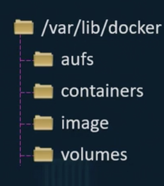
image/: Stores read-only layers representing container images.containers/: Stores container configurations and execution metadata.volumes/: Default location where Docker creates and manages persistent volumes.
1.2 Layered Architecture & Build Cache
Docker images are composed of immutable, read-only layers stacked on top of each other. Each instruction in a Dockerfile generates a distinct layer containing only the diff from the previous layer.
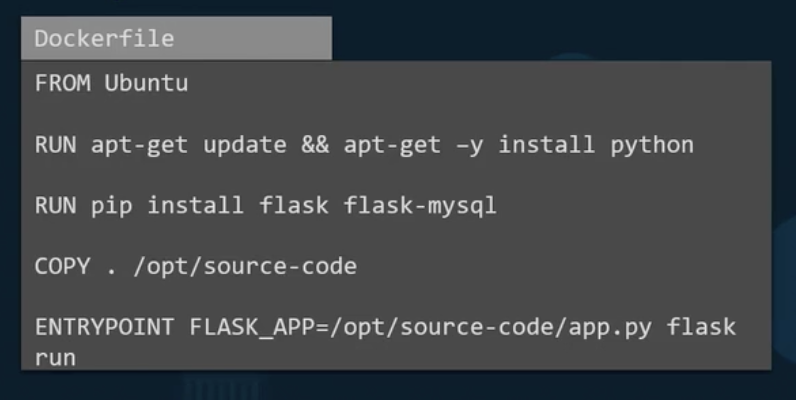
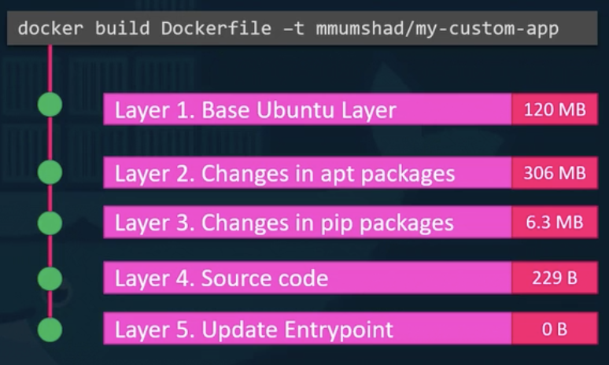
Build Cache & Layer Reusability
When multiple images share identical base instructions (e.g., base OS, package updates, dependencies), Docker pulls or reuses existing cached layers rather than rebuilding them. Only layers after a modified instruction are rebuilt.
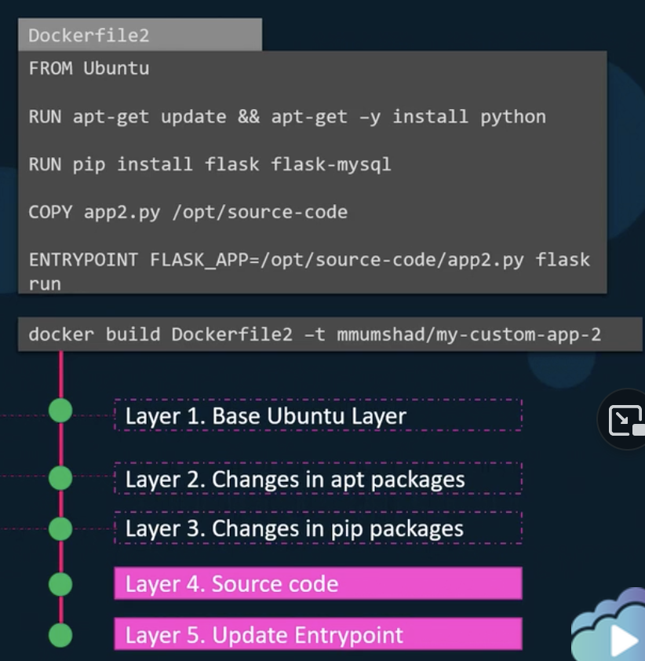
1.3 Image Layers vs Container Layer (Copy-on-Write)
Arranging image layers bottom-up:
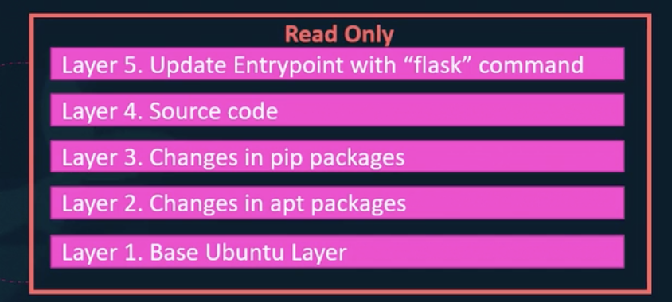
- Image Layers (Read-Only): Generated during
docker build. Once built, these layers are completely immutable and shared across all container instances running that image. - Container Layer (Read-Write): Created when
docker runstarts a container. All runtime changes (temporary files, log files, modified configs) reside exclusively in this writable layer.
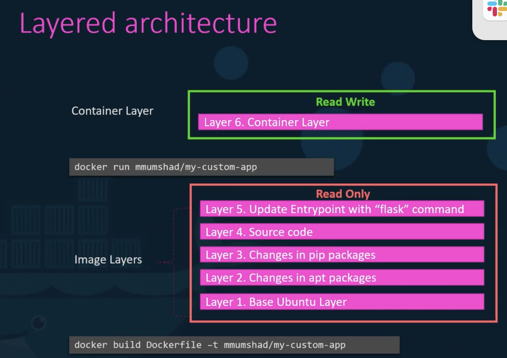
Copy-on-Write (CoW) Mechanism
- Files baked into the base image remain unaltered in their read-only layers.
- If a running container modifies an existing image file, Docker copies that file from the read-only layer up into the read-write container layer, where modifications are saved.
- Lifecycle Limitation: When the container is destroyed, its writable container layer and all uncommitted modifications are permanently deleted.
1.4 Data Persistence: Volume Mounts vs Bind Mounts
To retain data beyond container deletion, Docker supports two primary mount mechanisms:
| Feature | Volume Mount | Bind Mount |
|---|---|---|
| Source Location | Managed inside /var/lib/docker/volumes/ |
Any arbitrary path on the host (/data, etc.) |
| Creation | Docker automatically creates the volume directory | Path must already exist or Docker creates it as root |
| Management | Managed via Docker CLI (docker volume ...) |
Managed directly by host OS file system tools |
| Portability | High; decoupled from host filesystem structure | Low; tightly coupled to specific host paths |
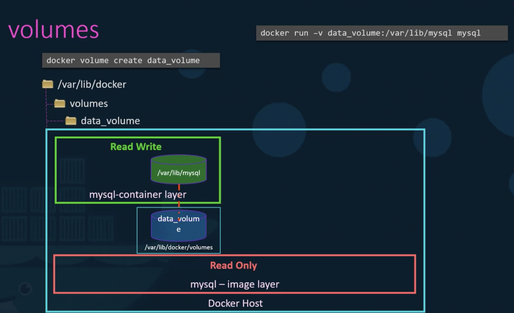
Volume Mount Example
# 1. Create a managed volume
docker volume create data_volume
# 2. Mount into container (-v syntax)
docker run -d -v data_volume:/var/lib/mysql mysql
# Auto-creation: If data_volume2 does not exist, Docker creates it automatically
docker run -d -v data_volume2:/var/lib/mysql mysql
Bind Mount Example
# Old -v syntax
docker run -d -v /data/mysql:/var/lib/mysql mysql
# Preferred modern --mount syntax (verbose key-value format)
docker run -d \
--mount type=bind,source=/data/mysql,target=/var/lib/mysql \
mysql
1.5 Docker Storage Drivers
Storage drivers manage the container's read-write layer and implement the Copy-on-Write (CoW) mechanism across image layers.
- Common Drivers:
overlay2(default for modern Linux),aufs,btrfs,zfs,devicemapper. - Selection: Automatically chosen by Docker based on the host kernel and underlying OS filesystem support.
[!NOTE] Storage drivers only manage ephemeral image and container layers. They do not manage persistent volumes. Persistent volumes are handled by Volume Driver Plugins.
1.6 Docker Volume Driver Plugins
Volume driver plugins allow Docker to create volumes on external, remote, or cloud storage solutions rather than the default local /var/lib/docker/volumes path.
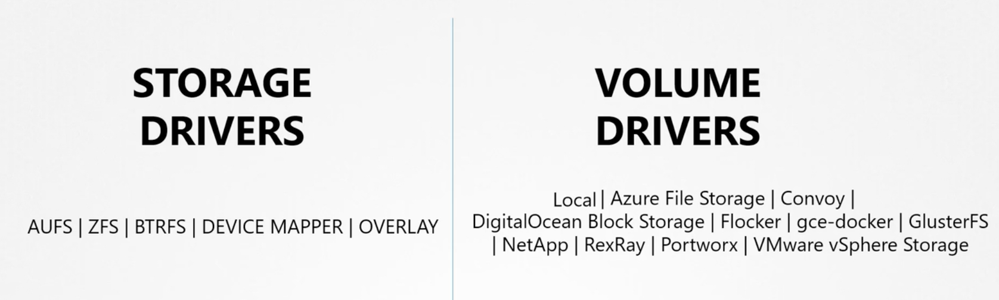
- Common Plugins: Local (default), RexRay, Portworx, Flocker, DigitalOcean Block Storage, GlusterFS, NetApp.
- Multi-Cloud Support: Plugins like RexRay connect directly to AWS EBS, GCP Persistent Disk, or OpenStack Cinder.
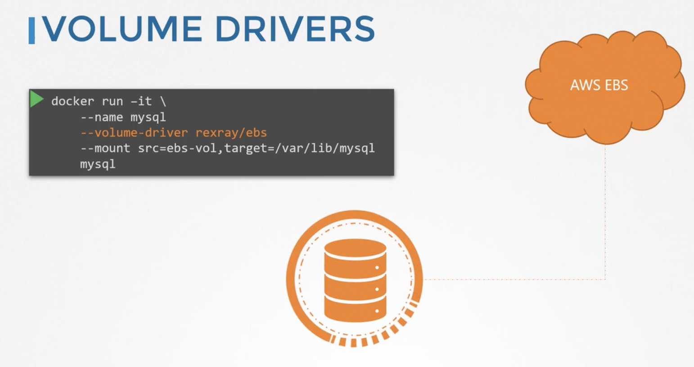
# Running container backed by cloud block storage via volume plugin
docker run -d \
--volume-driver rexray/ebs \
-v ebs-volume:/var/lib/mysql \
mysql
2. Container Storage Interface (CSI)
2.1 Evolution: CRI, CNI, and CSI
Early Kubernetes versions maintained in-tree storage drivers where vendor-specific code lived directly inside the core Kubernetes codebase. To decouple third-party plugins from Kubernetes releases, standard interfaces were introduced:
- CRI (Container Runtime Interface): Standard interface for container engines (containerd, CRI-O).
- CNI (Container Network Interface): Standard interface for network plugins (Calico, Flannel, Cilium).
- CSI (Container Storage Interface): Standard universal interface for storage providers.
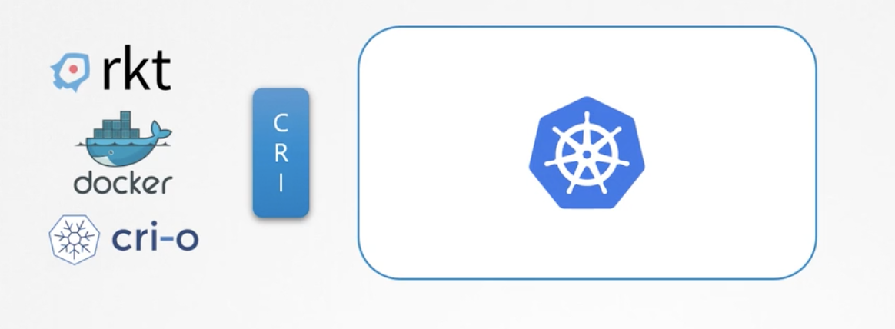
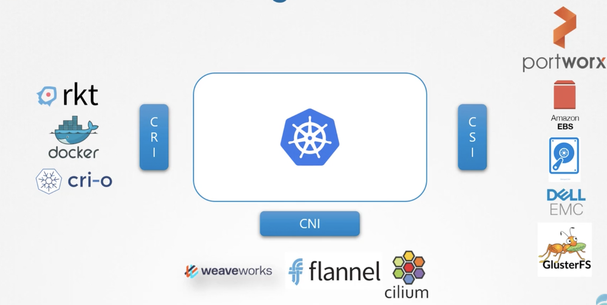
2.2 CSI Architecture & RPC Specification
CSI is a vendor-neutral specification allowing container orchestrators (Kubernetes, Mesos, Cloud Foundry) to interact with any storage provider through standardized gRPC remote procedure calls.
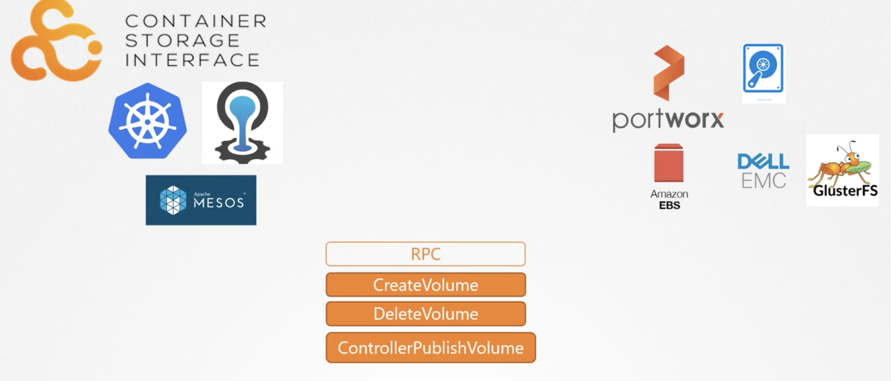
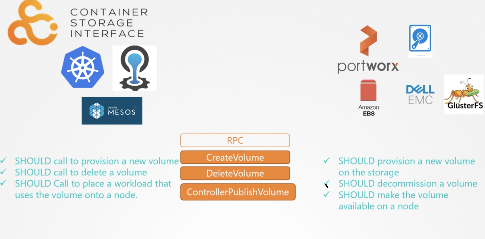
Key CSI Operations:
CreateVolume/DeleteVolume: Orchestrator requests storage creation or decommission on the storage backend.ControllerPublishVolume/ControllerUnpublishVolume: Storage controller attaches/detaches block storage to/from a specific compute node.NodeStageVolume/NodePublishVolume: Formats the volume and mounts it into the Pod container target filesystem.
3. Kubernetes Volumes
3.1 Ephemeral Pod Lifecycle & Volume Need
Pods are ephemeral resources. When a container terminates or a Pod restarts, all data written inside the container's root filesystem is lost.
Attaching a volume at the Pod level decouples storage lifecycle from container lifecycles: - Data persists across container crashes within the same Pod. - Different containers in the same Pod can share files by mounting the same volume.
3.2 Volume Definition & Mount Syntax
A volume is defined in spec.volumes and mounted into container paths using spec.containers[*].volumeMounts.
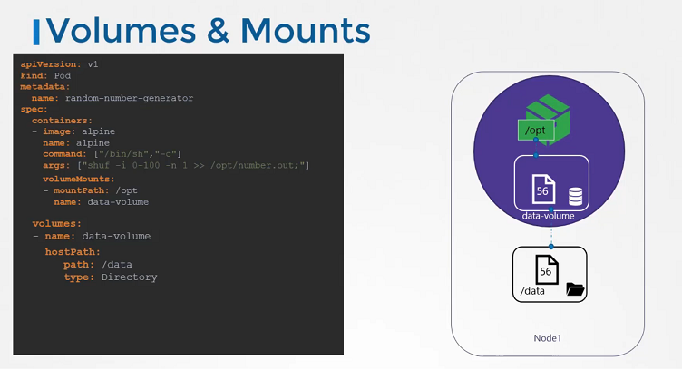
apiVersion: v1
kind: Pod
metadata:
name: random-number-generator
spec:
containers:
- name: alpine
image: alpine
command: ["/bin/sh", "-c"]
args: ["shuf -i 1-100 -n 1 > /opt/number.out; sleep 3600"]
volumeMounts:
- name: data-volume
mountPath: /opt
volumes:
- name: data-volume
hostPath:
path: /data
type: DirectoryOrCreate
3.3 Volume Storage Types & hostPath Limitations
While hostPath maps a directory from the local worker node into the Pod:
- Single Node Clusters: Works fine for local testing.
- Multi-Node Clusters: Never recommended for production. If the Pod is rescheduled onto another worker node, it accesses a completely different local directory lacking previous data.
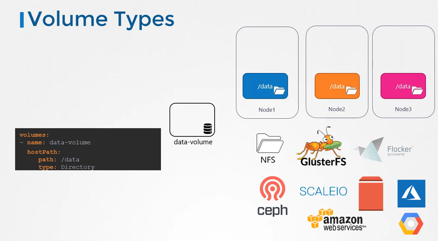
Cluster & Cloud Storage Alternatives:
Kubernetes supports enterprise networked and cloud storage solutions: - Network Storage: NFS, CephFS, GlusterFS, iSCSI. - Cloud Volumes: AWS EBS, GCE Persistent Disk, Azure Disk/File.
# Mounting an AWS EBS volume directly inside a Pod
spec:
volumes:
- name: data-volume
awsElasticBlockStore:
volumeID: "vol-049df61146c4d7951"
fsType: ext4
[!WARNING] Defining storage configurations directly inside Pod manifests tightly couples application manifests with cluster infrastructure. This operational limitation led to the separation of PersistentVolumes (PV) and PersistentVolumeClaims (PVC).
4. Persistent Volumes (PV)
4.1 Architecture & Administrator Workflow
- PersistentVolume (PV): A cluster-scoped storage resource provisioned by a cluster administrator (or dynamically via StorageClasses). It captures low-level storage details (e.g., NFS server IP, cloud disk ID, local disk path).
- Decoupling: Developers request storage via PersistentVolumeClaims (PVC) without needing to know underlying storage backend IPs, credentials, or volume IDs.
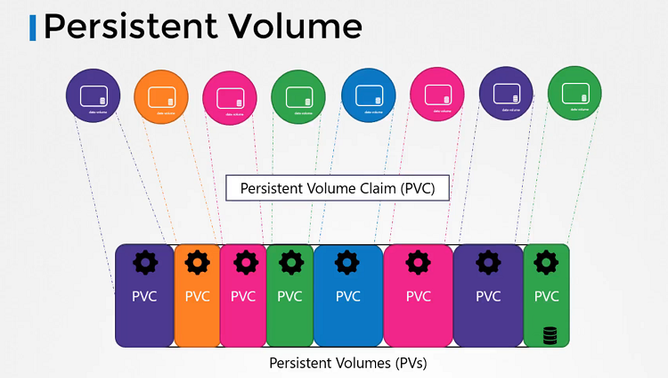
4.2 Access Modes
Access modes specify how nodes can attach and mount the volume:
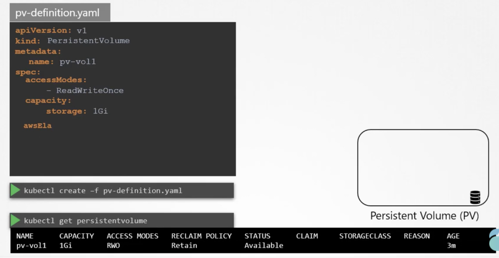
| Access Mode | CLI Abbr | Description | Common Backends |
|---|---|---|---|
| ReadWriteOnce | RWO |
Mounted as read-write by a single node only | AWS EBS, GCE PD, Azure Disk |
| ReadOnlyMany | ROX |
Mounted as read-only by many nodes simultaneously | NFS, CephFS |
| ReadWriteMany | RWX |
Mounted as read-write by many nodes simultaneously | NFS, Azure File, GlusterFS |
| ReadWriteOncePod | RWOP |
Mounted as read-write by a single Pod across the cluster | CSI-supported drivers (k8s 1.22+) |
[!IMPORTANT] Access modes indicate node-level concurrency, not Pod concurrency. Multiple Pods running on the same worker node can all access an
RWOvolume simultaneously.
4.3 PersistentVolume Manifest & Management
apiVersion: v1
kind: PersistentVolume
metadata:
name: pv-vol1
spec:
capacity:
storage: 1Gi
accessModes:
- ReadWriteOnce
persistentVolumeReclaimPolicy: Retain
hostPath:
path: /tmp/data
Core CLI Commands:
# Create PersistentVolume
kubectl apply -f pv-vol1.yaml
# Verify PV creation & status
kubectl get pv
# Sample Output:
# NAME CAPACITY ACCESS MODES RECLAIM POLICY STATUS CLAIM STORAGECLASS AGE
# pv-vol1 1Gi RWO Retain Available 12s
# Describe details
kubectl describe pv pv-vol1
# Delete PV
kubectl delete pv pv-vol1
5. Persistent Volume Claims (PVC)
5.1 Architecture & Binding Mechanism
A PersistentVolumeClaim (PVC) is a namespace-scoped request for storage by a user. Kubernetes automatically searches for an Available PersistentVolume that satisfies the claim's requirements and binds them together.
Binding criteria evaluated:
1. Sufficient Storage Capacity (requests.storage $\le$ PV capacity).
2. Matching Access Modes (accessModes).
3. Matching StorageClass (storageClassName).
4. Label Selectors (selector.matchLabels if specified).
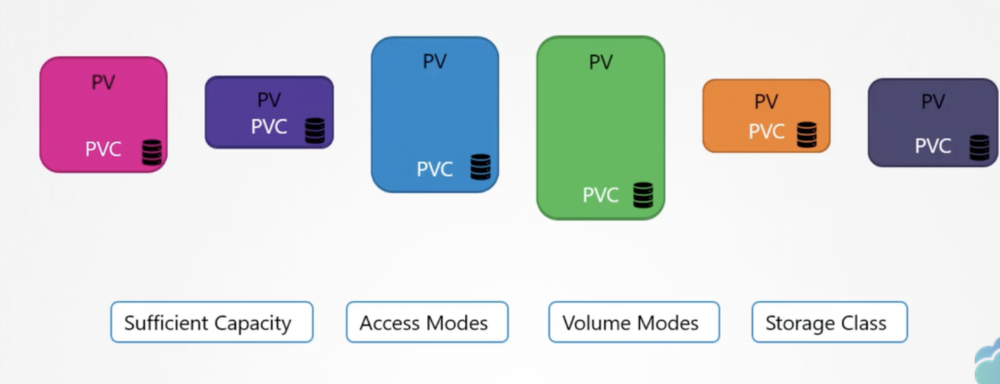
5.2 1-to-1 Binding Principle & Capacity Matching
- Strict 1-to-1 Mapping: Every bound PVC is bound to exactly one PV. No other PVC can claim remaining surplus capacity of that PV.
- Smaller Claim vs Larger Volume: If a PVC requests
500Miand the only available matching PV is1Gi, Kubernetes binds the500Miclaim to the1Givolume. The remaining500Miis locked and unusable by other claims.
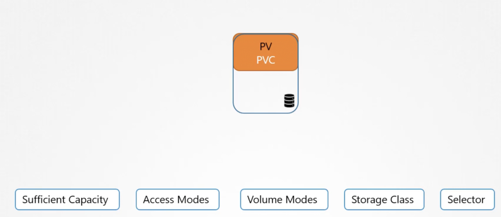
- Pending Claims: If no suitable PV is available, the PVC remains in
Pendingstatus until a matching volume is created or dynamic provisioning triggers.
5.3 PVC Manifest & Binding Lifecycle
apiVersion: v1
kind: PersistentVolumeClaim
metadata:
name: myclaim
spec:
accessModes:
- ReadWriteOnce
resources:
requests:
storage: 500Mi
# Apply PVC manifest
kubectl apply -f myclaim.yaml
# Check PVC binding status
kubectl get pvc
# NAME STATUS VOLUME CAPACITY ACCESS MODES STORAGECLASS AGE
# myclaim Bound pv-vol1 1Gi RWO 5s
# Check corresponding PV status (becomes Bound to default/myclaim)
kubectl get pv
# NAME CAPACITY ACCESS MODES RECLAIM POLICY STATUS CLAIM STORAGECLASS AGE
# pv-vol1 1Gi RWO Retain Bound default/myclaim 2m
5.4 PersistentVolume Reclaim Policies
The reclaim policy tells Kubernetes what to do with the physical volume once its associated PVC is deleted:
| Reclaim Policy | Behavior upon PVC Deletion | Target PV Status |
|---|---|---|
Retain (Default for manual PV) |
Underlying volume and storage remain untouched. Data is preserved. | Released. Needs manual cleanup before re-use. |
Delete (Default for Dynamic PV) |
Automatically deletes the Kubernetes PV object and the physical storage asset (e.g. AWS EBS). | N/A (Destroyed). |
Recycle (Deprecated) |
Scrubs volume data via basic rm -rf /thevolume/* and makes the PV available again. |
Available. |
5.5 Using PVCs in Pods & Deployments
To consume a PVC inside a Pod, reference the claim name under spec.volumes[*].persistentVolumeClaim.claimName:
apiVersion: v1
kind: Pod
metadata:
name: mypod
spec:
containers:
- name: myfrontend
image: nginx
volumeMounts:
- name: mypd
mountPath: /var/www/html
volumes:
- name: mypd
persistentVolumeClaim:
claimName: myclaim
[!TIP] In Deployments or StatefulSets, place
volumesunderspec.template.spec.volumesandvolumeMountsunderspec.template.spec.containers[*].volumeMounts.
6. Hands-On CKA Scenarios & Troubleshooting
6.1 Scenario 1: Inspecting & Persisting Container Logs with hostPath
Problem Statement: An application Pod named webapp outputs logs directly to /log/app.log. Because storage is ephemeral, deleting the Pod destroys the log history. Configure a hostPath volume to persist logs to /var/log/webapp on the host.
-
Inspect container logs via
exec:bash kubectl exec webapp -- cat /log/app.log -
Export the current Pod definition:
bash kubectl get pod webapp -o yaml > webapp.yaml -
Update
webapp.yamlwithvolumeMountsandhostPath: ```yaml apiVersion: v1 kind: Pod metadata: name: webapp spec: containers:- name: event-simulator image: kodekloud/event-simulator env:
- name: LOG_HANDLERS value: file volumeMounts:
- mountPath: /log name: log-volume volumes:
- name: log-volume hostPath: path: /var/log/webapp type: DirectoryOrCreate ```
-
Recreate the Pod using
--force:bash kubectl replace -f webapp.yaml --force
6.2 Scenario 2: Creating a PersistentVolume (pv-log)
Requirements:
- Volume Name: pv-log
- Capacity: 100Mi
- Access Modes: ReadWriteMany
- Host Path: /pv/log
- Reclaim Policy: Retain
apiVersion: v1
kind: PersistentVolume
metadata:
name: pv-log
spec:
capacity:
storage: 100Mi
accessModes:
- ReadWriteMany
persistentVolumeReclaimPolicy: Retain
hostPath:
path: /pv/log
Apply and verify:
kubectl apply -f pv-log.yaml
kubectl get pv pv-log
6.3 Scenario 3: Troubleshooting PVC Binding Failures (claim-log-1)
Diagnostic Exercise: A student created a PVC that remained in Pending status.
❌ Non-Working Manifest Analysis
# BROKEN SPEC: Will remain in Pending state
apiVersion: v1
kind: PersistentVolumeClaim
metadata:
name: claim-log-1
spec:
accessModes:
- ReadWriteOnce # ERROR 1: pv-log only supports ReadWriteMany
volumeMode: Filesystem
resources:
requests:
storage: 50Mi
storageClassName: "" # Restricts to PVs with no storageClassName
selector:
matchLabels:
release: "stable" # ERROR 2: pv-log does not possess this label
matchExpressions:
- {key: environment, operator: In, values: [dev]} # ERROR 3: Label missing on PV
Why it failed:
1. Access Mode Mismatch: pv-log offers ReadWriteMany, but claim requests ReadWriteOnce.
2. Selector Mismatch: The claim requires labels release: stable and environment: dev which do not exist on pv-log.
✅ Fixed Working Manifest
apiVersion: v1
kind: PersistentVolumeClaim
metadata:
name: claim-log-1
spec:
accessModes:
- ReadWriteMany
resources:
requests:
storage: 50Mi
Apply and verify:
kubectl apply -f claim-log-1.yaml
kubectl get pvc claim-log-1
kubectl get pv pv-log
6.4 Scenario 4: Mounting PVC into Application Pod
Update the webapp Pod to consume claim-log-1:
apiVersion: v1
kind: Pod
metadata:
name: webapp
spec:
containers:
- name: event-simulator
image: kodekloud/event-simulator
env:
- name: LOG_HANDLERS
value: file
volumeMounts:
- mountPath: /log
name: log-volume
volumes:
- name: log-volume
persistentVolumeClaim:
claimName: claim-log-1
Apply the updated Pod:
kubectl replace -f webapp.yaml --force
7. StorageClasses & Dynamic Provisioning
7.1 Static vs Dynamic Provisioning
Static Provisioning (Manual)
- Storage admin manually creates disks in cloud/SAN (e.g. AWS EBS, GCE PD).
- Admin manually writes and creates a
PersistentVolumemanifest pointing to disk ID. - User writes a
PersistentVolumeClaim. - Kubernetes binds PVC to PV.
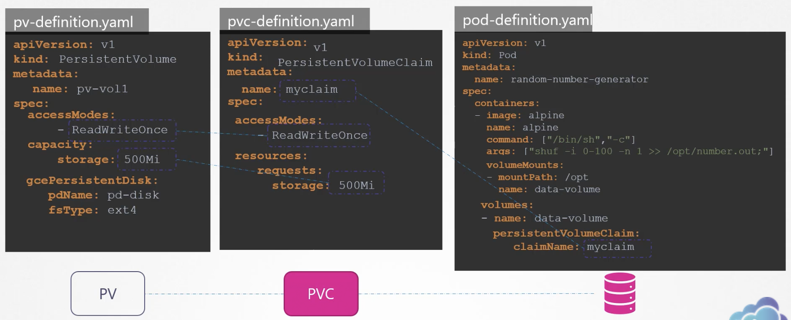
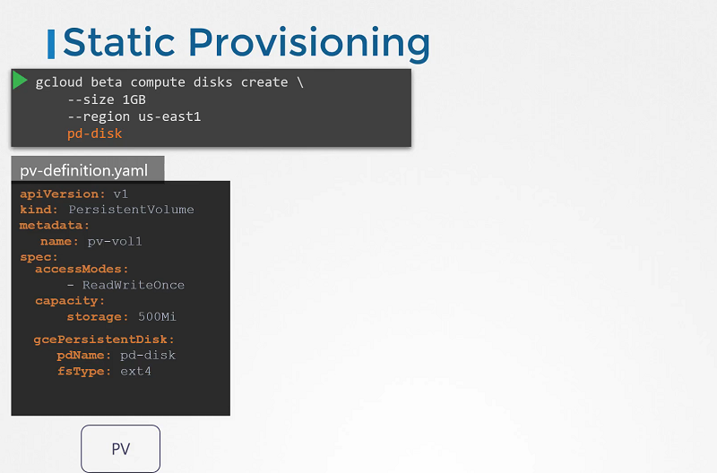
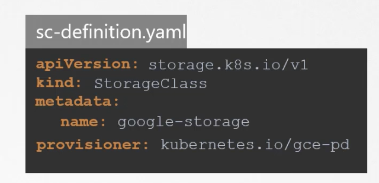
Bottleneck: Highly manual, slow, and doesn't scale for large multi-tenant clusters.
Dynamic Provisioning (Automated via StorageClass)
- Administrator defines a
StorageClasswith a provisioner and parameters. - User submits a
PersistentVolumeClaimspecifyingstorageClassName. - The StorageClass automatically provisions the cloud disk, creates a
PersistentVolume, and binds it to the PVC.
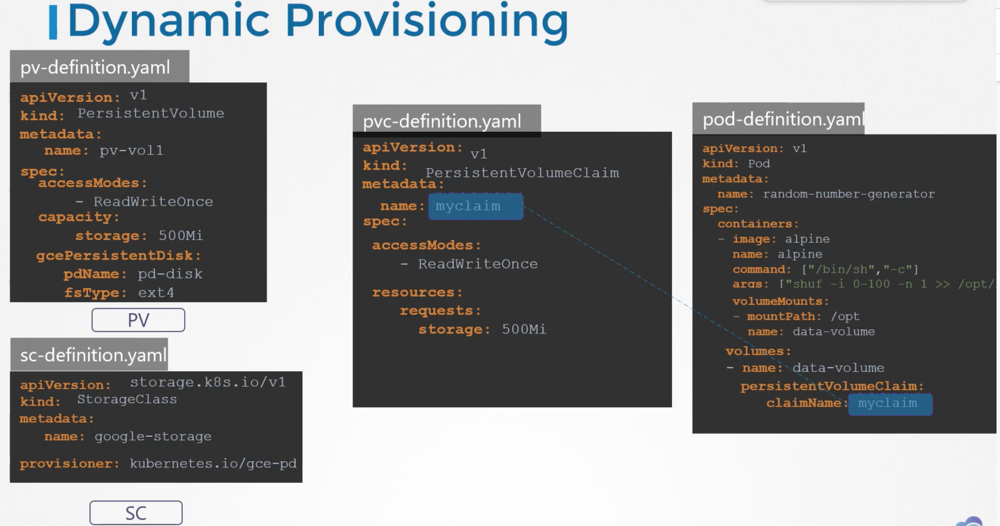
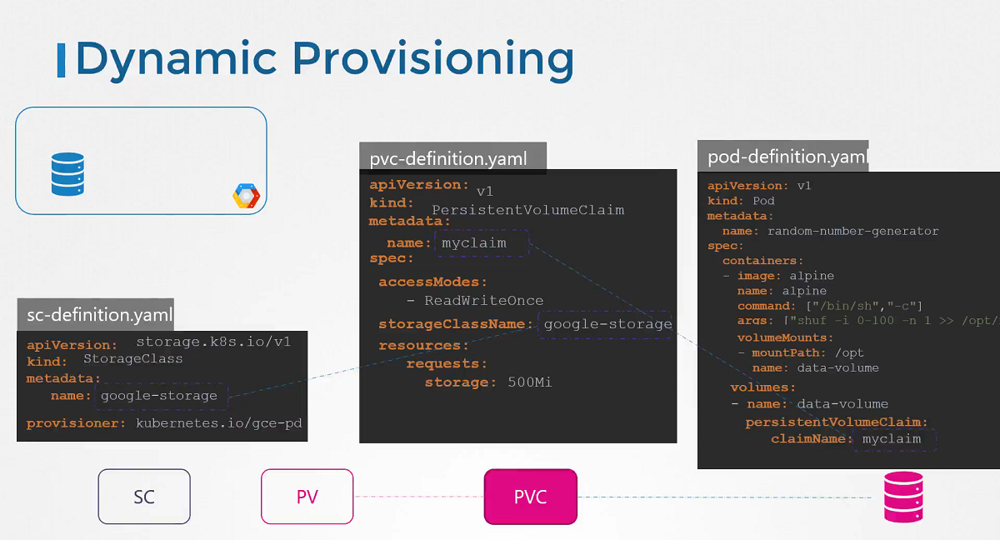
7.2 StorageClass Architecture & Provisioners
A StorageClass specifies the provisioner plugin and backend storage attributes:
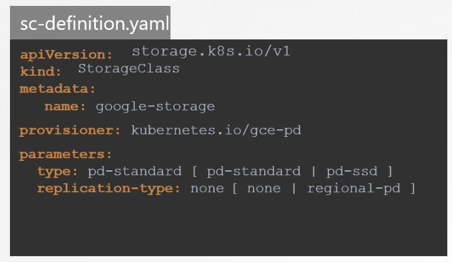
apiVersion: storage.k8s.io/v1
kind: StorageClass
metadata:
name: google-storage
provisioner: kubernetes.io/gce-pd
parameters:
type: pd-ssd
replication-type: none
Common In-Tree & CSI Provisioners:
- AWS EBS CSI:
ebs.csi.aws.com(legacy:kubernetes.io/aws-ebs) - GCP Persistent Disk CSI:
pd.csi.storage.gke.io(legacy:kubernetes.io/gce-pd) - Azure Disk CSI:
disk.csi.azure.com - Local Storage (No Dynamic Provisioning):
kubernetes.io/no-provisioner
7.3 Volume Binding Modes: Immediate vs WaitForFirstConsumer
The volumeBindingMode attribute determines when volume provisioning and binding occur:
| Binding Mode | Description | Typical Use Case |
|---|---|---|
Immediate (Default) |
PV is created and bound immediately once the PVC is submitted. | Centralized cloud storage unconstrained by topology. |
WaitForFirstConsumer |
Delays volume binding and provisioning until a Pod requesting the PVC is created and scheduled. | Topology-constrained storage (Local PVs, specific Availability Zones). |
[!IMPORTANT] With
WaitForFirstConsumer, the scheduler factors in Pod scheduling constraints (node affinity, tolerations, resource availability) before creating or binding the volume on the targeted node.
7.4 CKA Troubleshooting: Delayed Binding with Local Storage
1. Inspect Cluster StorageClasses
kubectl get storageclasses
# OR
kubectl get sc
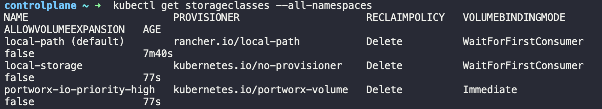
2. Identifying Non-Dynamic Provisioners
StorageClasses using kubernetes.io/no-provisioner do not support dynamic volume provisioning. PVs for these classes must be manually created.
3. Analyzing Pending PVC with WaitForFirstConsumer
A PVC named local-pvc is created with storageClassName: local-storage. A matching PV local-pv exists, but the PVC stays in Pending state.
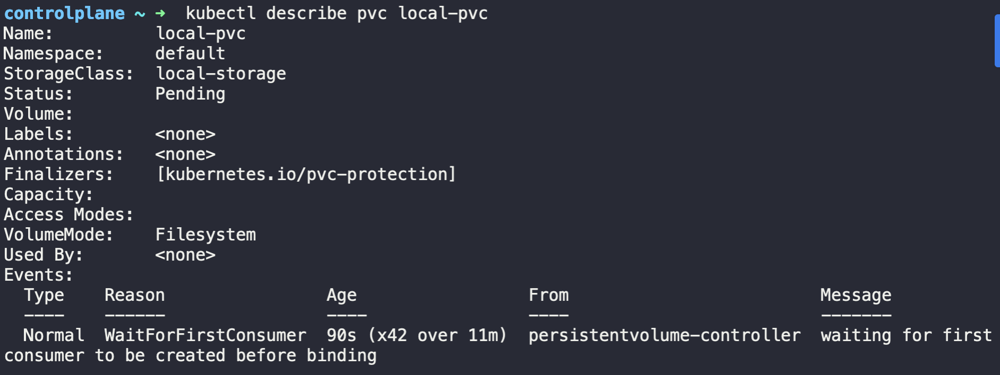
# local-pvc definition
apiVersion: v1
kind: PersistentVolumeClaim
metadata:
name: local-pvc
spec:
accessModes:
- ReadWriteOnce
storageClassName: local-storage
resources:
requests:
storage: 500Mi
Diagnostic Reason:
The StorageClass local-storage defines volumeBindingMode: WaitForFirstConsumer. The binding will remain delayed until a Pod actively claiming local-pvc is scheduled.
4. Resolving by Creating the Consuming Pod
apiVersion: v1
kind: Pod
metadata:
name: nginx
spec:
containers:
- name: nginx
image: nginx:alpine
volumeMounts:
- name: mypd
mountPath: /var/www/html
volumes:
- name: mypd
persistentVolumeClaim:
claimName: local-pvc
Once nginx is applied, the Pod is scheduled to a node, triggering immediate binding of local-pvc to local-pv.
5. Defining a Delayed-Binding StorageClass
apiVersion: storage.k8s.io/v1
kind: StorageClass
metadata:
name: delayed-volume-sc
provisioner: kubernetes.io/no-provisioner
volumeBindingMode: WaitForFirstConsumer
8. PVC Volume Expansion (Resizing)
Kubernetes allows online resizing of Persistent Volumes without downtime if supported by the underlying storage provider and CSI driver.
8.1 Enabling Volume Expansion in StorageClass
The StorageClass must have allowVolumeExpansion: true:
apiVersion: storage.k8s.io/v1
kind: StorageClass
metadata:
name: expandable-sc
provisioner: csi.example.com
allowVolumeExpansion: true # REQUIRED for PVC resizing
volumeBindingMode: Immediate
8.2 Expanding an Existing PVC & Filesystem Status
[!CAUTION] You can only increase volume size. Shrinking volume capacity is never supported in Kubernetes.
- Edit the PVC directly or patch the storage request: ```bash # Option A: Interactive edit kubectl edit pvc data-pvc
# Option B: Imperative JSON patch kubectl patch pvc data-pvc -p '{"spec":{"resources":{"requests":{"storage":"20Gi"}}}}' ```
-
Inspect expansion progress:
bash kubectl describe pvc data-pvc -
FileSystemResizePendingCondition: - If the underlying physical volume is resized by the CSI controller, but the filesystem within the Pod has not yet expanded, the PVC status reportsFileSystemResizePending. - Once a Pod mounts the volume,kubeletresizes the internal filesystem and clears the condition.
9. CSI Volume Snapshots & VolumeSnapshotClass
Kubernetes provides standard Custom Resource Definitions (snapshot.storage.k8s.io) for point-in-time copies of volumes.
9.1 VolumeSnapshotClass
Defines the CSI snapshot driver and deletion policy:
apiVersion: snapshot.storage.k8s.io/v1
kind: VolumeSnapshotClass
metadata:
name: csi-aws-vsc
driver: ebs.csi.aws.com
deletionPolicy: Delete # Or 'Retain' to preserve cloud snapshot after object deletion
9.2 Creating a VolumeSnapshot from a PVC
apiVersion: snapshot.storage.k8s.io/v1
kind: VolumeSnapshot
metadata:
name: mysql-backup-snapshot
namespace: database
spec:
volumeSnapshotClassName: csi-aws-vsc
source:
persistentVolumeClaimName: mysql-data-pvc
Check snapshot readiness:
kubectl get volumesnapshot -n database
# NAME READYTOUSE SOURCEPVC RESTORESIZE AGE
# mysql-backup-snapshot true mysql-data-pvc 10Gi 45s
9.3 Restoring a PVC from a VolumeSnapshot
Create a new PVC initialized with data from an existing snapshot by configuring the dataSource field:
apiVersion: v1
kind: PersistentVolumeClaim
metadata:
name: mysql-restored-pvc
namespace: database
spec:
storageClassName: expandable-sc
dataSource:
name: mysql-backup-snapshot
kind: VolumeSnapshot
apiGroup: snapshot.storage.k8s.io
accessModes:
- ReadWriteOnce
resources:
requests:
storage: 20Gi # Must be greater than or equal to snapshot size
10. CKA Exam Quick Reference & Cheat Sheet
# Core Resource Queries
kubectl get pv
kubectl get pvc -n <namespace>
kubectl get sc
kubectl get volumesnapshot -n <namespace>
# Describe & Inspect Events
kubectl describe pvc <pvc-name>
kubectl describe pv <pv-name>
# Fast Dry-Run Generation
kubectl run test-pod --image=nginx --dry-run=client -o yaml > pod.yaml
# Patching Resources
kubectl patch pvc <pvc-name> -p '{"spec":{"resources":{"requests":{"storage":"10Gi"}}}}'
Essential Exam Takeaways:
- Scope Distinction:
PersistentVolumeandStorageClassare cluster-scoped resources.PersistentVolumeClaimandPodare namespace-scoped resources. - 1-to-1 Rule: One PVC binds to exactly one PV. Unused capacity in a bound PV cannot be shared.
- Delayed Binding: If a PVC is
PendingwithWaitForFirstConsumer, inspect whether a Pod utilizing the claim has been scheduled. - Volume Expansion: Requires
allowVolumeExpansion: trueon theStorageClass. Can only expand, never reduce. - Snapshot Restoration: PVC created from snapshot must request capacity $\ge$ the snapshot's
restoreSize.